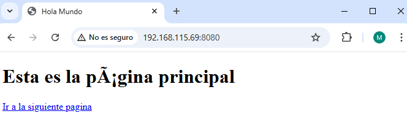
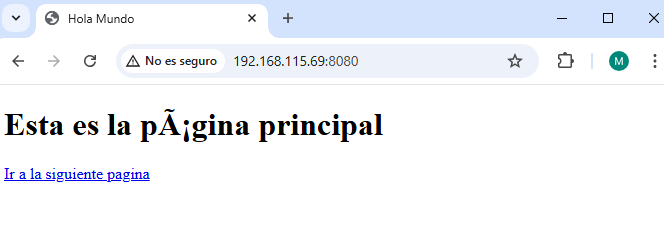

Práctica 3.4: Despliegue de una aplicación una aplicación React en Netlify (PaaS)
Creación de nuestra aplicación
Lo primero es crear los siguientes archivos en un mismo directorio para crear la aplicación:

 Ahora se crea el package.json con npm init.
Ahora se crea el package.json con npm init.
Y se comprueba qque funciona ejecutando node aplicacion.js y comprobándolo con la ip de la máquina y el puerto que por defecto es el 8080.
 

Aplicación para Netlify
Se clona el repositorio con el siguiente comando: git clone https://github.com/StackAbuse/color-shades-generator
Lo primero es registrarse en NETLIFY con el correo y sin usar el Github.
 Luego se crea un token de acceso y se copia dicho token.
Luego se crea un token de acceso y se copia dicho token.


Despliegue mediante CLI
Se instala el CLI de NETLIFY.
 Se guarda el token de antes para acceder.
Se guarda el token de antes para acceder.
Se hace el login con el comando siguiente:
Dentro del proyecto se instala las librerías.
 Se ejecuta el proyecto.
Se ejecuta el proyecto.
Se hace un pre despliegue ahora con netlify deploy.
 Y finalmente se despliega con netlify deploy --prod.
Y finalmente se despliega con netlify deploy --prod.
 Se comprueba el despliegue.
Se comprueba el despliegue.

Despliegue mediante conexión con Github
Lo primero es eliminar la página creada en netlify y el repositorio que se habia clonado.
Se descarga las fuentes en formato .zip.
 Se crea un nuevo repositorio.
Se crea un nuevo repositorio.
Se añade el contenido de la carpeta al repositorio.
 Ahora se procede a conectar el repositorio con NETLIFY, se autoriza todo y luego se selecciona el repositorio creado antes.
Ahora se procede a conectar el repositorio con NETLIFY, se autoriza todo y luego se selecciona el repositorio creado antes.

 Se comprueba que el nombre está disponible.
Se comprueba que el nombre está disponible.
 Se introducen los siguientes comandos en los campos de datos y se le da a deploy.
Se introducen los siguientes comandos en los campos de datos y se le da a deploy.
Ahora se accede a la carpeta public y se modifica el archivo robot.txt, se pone el nombre en disallow, se sube al repositorio con un commit y ya estaría hecho.

Despliegue en Vercel
En Vercel es muy similiar, lo primero es registrarse y autorizar a Github volviendo a seleccionar el repositorio deseado.
 Se ponen los siguientes comandos y nombre y se le da a deploy.
Se ponen los siguientes comandos y nombre y se le da a deploy.
 Por último se vuelve a modificar el robot.txt, se hace commit y ya estaría terminado
Por último se vuelve a modificar el robot.txt, se hace commit y ya estaría terminado